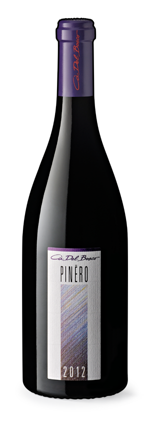

Б
У
Т
Ы
Л
О
Ч
К
А
:)

КТО СКОЛЬКО ПЬЁТ? :)
Правила игры
В данной игре необходимо крутить бутылку. В зависимости от режима игры при нажатии кнопки
"Играть" будет выбрано 10 случайных вариантов из списков ниже. Вам выпадет один из них. Крутите
бутылочку и испытайте свою удачу!
-
Выпивка - режим игры, в котором участникам необходимо выпить указанное количество
алкоголя.
Придумайте одну стандартную меру (например, одна рюмка виски или глоток пива) и
используйте ее в игре. Если вы взяли в качестве стандартной меры одну рюмку виски, то,
при выпадении "Пьёшь две", необходимо выпить 2 рюмки виски. В случае выпадения двойного
или половинного действия любой вариант, который как-то будет связан с вами,
умножает/половинит
то, что вам предназначалось (Например, у вас было двойное действие. У соседа выпал
вариант
- "Все отдыхают 5 минут". В этом случае вы отдыхаете 10 минут). При выпадении
двойного/половинного действия
несколько раз - они перемножаются.
В этом режиме могут выпасть следующие варианты:
1)"Пьёшь одну", - выпивается одна стандартная порция;
2)"Пьёшь 1/2", - выпивается половина стандартной порции;
3)"Пьёшь две", - выпивается две стандартных порции;
4)"Пьешь три или звонок бывшей (бывшему)", - либо звоните бывшей второй половинке при всех, либо выпиваете сразу 3 порции;
5)"Удвоение следующего действия", - удвоение следующего вашего действия независимо от того, чей будет ход;
6)"Пропусти ход", - в этом случае вы ничего не делаете этот ход и крутит следующий игрок;
7)"Следующий раз не пьешь", - любая следующая порция выпивки для вас игнорируется вами. (Соседу выпало что вы пьете одну - вы не пьете);
8)"Пьёшь вместо следующего", - любая следующая порция выпивки для следующего игрока пьётся вами. (Выпало, что пьют все - сосед не пьет, а вы пьете за себя и за него);
9)"Сосед справа выпьет одну", игрок, который ходил до вас пьёт одну порцию;
10)"Сосед слева выпьет одну" - игрок, который должен ходить следующим пьёт одну порцию;
11)"Пьёшь сколько хочешь", - в этот раз сами выбираете сколько пить, либо не пить вообще;
12)"Половина от следующего действия", - выполняется половина следующего вашего действия независимо от того, чей будет ход;
13)"Все отдыхают 5 минут", - никто не ходит 5 минут;
14)"Все пьют по одной", - каждый игрок выпивает по одной порции;
15)"Выбирай кто выпьет одну", - делайте выбор, кому достанется эта нелегкая ноша (при выбора игрока, который не пьёт определенное время, не пьёт никто);
16)"Пьёшь 1/4", - необходимо выпить четверть стандартной порции;
17)"Срабатывают 2 соседних варианта", - сморите на смежные кружки, и выполняете, что написано на них;
18)"Следующие 2 раза не пьёшь", - любые следующие две порции выпивки игнорируются вами;
19)"Расскажи историю или выпей одну", - с вас история, либо вам необходимо выпить порцию;
20)"Пьют одну курящие", - если не курили последний месяц то не пьёте;
21)"Пьют одну некурящие", - если курили последний месяц то не пьёте;
22)"Не пьёшь 3 минуты", - любая порция, выпавшая вам в течении указанного времени, игнорируется вами;
23)"5 минут пьешь только ты", - любая порция, выпавшая всем кроме вас, игнорируется игроками;
24)"Пьёшь одну в течении 15 сек", - необходимо растянуть порцию на 15 секунд, насладиться вкусом алкоголя!;
25)"Пьют одну у кого в имени есть 'а' ", - выпить необходимо тем, у кого в имени есть буква "а";
26)"Пьют одну у кого в имени есть 'о' ", - выпить необходимо тем, у кого в имени есть буква "о";
27)"Пьют одну у кого в имени есть 'я' ", - выпить необходимо тем, у кого в имени есть буква "я";
28)"Не пьёшь 5 минут", - любая порция, выпавшая вам в течении указанного времени, игнорируется вами;
29)"Один из соседей пьёт одну, кто?", - делайте выбор, кому из соседей достанется эта нелегкая ноша (при выбора игрока, который не пьёт определенное время, не пьёт никто);
30)"Последний поднявший руку пьёт одну", - кто последний поднял руку после того, как кружок стал желтым, тот пьёт порцию;
31)"Нижний и верхний варианты - твои", - выполняете, что написано на верхнем нижнем круге (в случае совпадения этого варианта с одним из кругов, выполняется только то, что написано на другом круге);
32)"Твой отдых окончен", - время, которое вы должны были не пить обнуляется;
33)"Всем всегда наливаешь ты", - все порции наливаете вы, пока этот вариант не упадёт кому то другому (удвоение и деление не действуют на это);
34)"Пьют одну у кого в имени есть 'е' ", - выпить необходимо тем, у кого в имени есть буква "е";
35)"Пьёшь одну без закуски", - выпиваете одну без закуски.
- Отжимания - режим игры, в котором
участникам необходимо выполнить определенные спортивные действия.
В случае выпадения двойного или половинного действия любой вариант, который как-то будет
связан с вами, умножает/половинит
то, что вам предназначалось (Например, у вас было двойное действие. У соседа выпал
вариант
- "Все отдыхают 5 минут". В этом случае вы отдыхаете 10 минут). При выпадении
двойного/половинного действия
несколько раз - они перемножаются.
В этом режиме могут выпасть следующие варианты:
1)"Отожмись 1 раз", - отжимайтесь указанное количество раз;
2)"Отожмись 5 раз", - отжимайтесь указанное количество раз;
3)"Отожмись 8 раз", - отжимайтесь указанное количество раз;
4)"Отожмись 10 раз", - отжимайтесь указанное количество раз;
5)"Отожмись 15 раз", - отжимайтесь указанное количество раз;
6)"Отожмись 20 раз", - отжимайтесь указанное количество раз;
7)"Удвоение следующего действия", - удвоение следующего вашего действия независимо от того, чей будет ход;
8)"Половина от следующего действия", - выполняется половина следующего вашего действия независимо от того, чей будет ход;
9)"Отожмись на одной руке 1 раз", - отожмитесь на одной руке (или попытайтесь);
10)"Сделай пресс 10 раз", - делайте упражнение для пресса указанное количество раз;
11)"Сделай пресс 5 раз", - делайте упражнение для пресса указанное количество раз;
12)"Сделай пресс 3 раза", - делайте упражнение для пресса указанное количество раз;
13)"Сделай пресс 1 раз", - делайте упражнение для пресса указанное количество раз;
14)"Пропусти ход", - в этом случае вы ничего не делаете этот ход и крутит следующий игрок;
15)"Выбирай кто отожмется 5 раз", - делайте выбор, кому из игроков достанется эта нелегкая ноша;
16)"Выпей водички", - выпейте воды!;
17)"Срабатывают 2 соседних варианта", - сморите на смежные кружки, и выполняете, что написано на них;
18)"Отожмется 10 раз сосед справа", - предыдущему игроку необходимо отжаться указанное количество раз;
19)"Отожмется 3 раза сосед слева", - предыдущему игроку необходимо отжаться указанное количество раз;
20)"Минуту в стойке отжимания", - проведите минуту в стойке, в которой производится отжимание;
21)"Следующий игрок удваивает действия", - следующий игрок выполняет в 2 раза больше!;
22)"Полежи 5 минут", - полежите 5 минут, отдохните;
23)"Присядь 20 раз", - присядьте указанное количество раз;
24)"Все присядут 20 раз кроме тебя", - все кроме вас присядут указанное количество раз;
25)"Присядь 10 раз", - присядьте указанное количество раз;
26)"Все присядут 10 раз", - все кроме вас присядут указанное количество раз;
27)"Отожмись сколько хочешь", - отожмитесь сколько хотите, либо нисколько;
28)"Ты без упражнений на 5 минут", - любое упражнение, выпавшее вам в следующие 5 минут игнорируется;
29)"Все отдыхают 5 минут", - никто не крутит бутылку в течении 5 минут;
30)"Подпрыгни 20 раз", - подпрыгните указанное количество раз;
31)"Подпрыгни 50 раз", - подпрыгните указанное количество раз;
32)"Попей водички", - выпейте воды!;
33)"Все отожмутся 15 раз", - все отожмутся указанное количество раз;
34)"Половина от следующего действия", - выполняется половина следующего вашего действия независимо от того, чей будет ход;
35)"Армрестлинг с победителем", - испытайте силу прошлого победителя армрестлинга, в случае если армрестлинга еще не было, то испытайте силу предыдущего игрока ;
36)"Соседи отожмутся по 8 раз", - соседи отожмутся указанное количество раз;
-
Бутылочка - каноничный режим игры в бутылочку, в котором
участникам задаются провакационные вопросы или предписывается выполнение провакационных
действий. Для игры в этот режим необходимо наличие в группе примерно равное количество
девушек и парней. д/п означает ближайшего парня/девушку. Если вы мужского пола, то д/п
означает ближайшую девушку.
В этом режиме могут выпасть следующие варианты:
0: "История о себе", - расскажите историю о себе;
1: "Погладь по руке соседа справа", - погладьте соседа справа независимо от его пола!;
2: "Ничего не делай", - крутит следующий игрок;
3: "Расскажи секрет", - расскажите секрет, который вы до этого не рассказывали;
4: "Был поцелуй в лифте?", - честно ответьте на вопрос;
5: "Прокати на спине д/п справа", - прокатайте на спине в течении минуты ближайшую девушку справа, если вы парень, или прокатитесь на ближайшем парне справа, если вы девушка;
6: "Ты боишься темноты?", - честно ответьте на вопрос;
7: "В шкафу на 5 минут с д/п справа", - запритесь в шкафу с противоположным полом на 5 минут, нет никаких ограничений по действиям внутри:);
8: "Порекоммендуй всем книгу", - расскажите про книгу, и почему ее стоит прочитать;
9: "Возьми на руки д/п напротив", - возьмите на руки на минуту девушку напротив, или возьмитесь на руки парню напротив, если вы девушка;
10: "В шкафу на 5 минут один", - увы, в этот раз вы в шкафу один;
11: "Нравится кто-то здесь?", - честно ответьте на вопрос;
12: "Задай вопрос прошлому игроку", - задайте вопрос предыдущему игроку независимо от пола;
13: "Цвет нижнего белья сейчас?", - честно ответьте на вопрос;
14: "Иммунитет на 1 вопрос", - имеете право не отвечать на любой вопрос (не обязательно следующий);
15: "Часто смотришь неприличное?", - честно ответьте на вопрос;
16: "Подглядывал когда-нибудь?", - честно ответьте на вопрос;
17: "История о себе", - расскажите историю о себе;
18: "Поцелуй в щёку д/п слева", - поцелуйте в щеку ближайшую девушку слева, или поцелуйте ближайшего парня слева если вы девушка;
19: "Попрыгай на одной ноге 15 раз", - выполняйте:);
20: "Спой что-нибудь", - выполняйте:);
21: "Понюхай соседа слева", - понюхайте следующего игрока независимо от пола;
22: "Расскажи про неловкую ситуацию", - расскажите про любой неловки момент из своей жизни;
23: "Ты предавал кого-нибудь?", - честно ответьте на вопрос;
24: "Расскажи о чем ты жалеешь", - честно ответьте на вопрос;
25: "Любимый фрукт?", - честно ответьте на вопрос;
26: "Был ли в секс шопе?", - честно ответьте на вопрос;
27: "Прокукарекай", - закукарейкайте во весь голос;
28: "Заткни уши на 5 минут", - можете одеть наушники, вы не должны слышать, что отвечают другие в течении 5 минут;
29: "Включи свою песню", - пусть другие услышат вашу любимую музыку!;
30: "Устраивали прошлые отношения?", - честно ответьте на вопрос;
31: "Твой % пошлости от 0 до 100", - оцените себя;
32: "Д/п слева тебе нравится?", - честно ответьте на вопрос;
33: "Обнимашки с д/п слева", - тепло обнимите ближайшую девушку слева или ближайшего парня слева, если вы девушка;
34: "Нелюбимое качество в д/п справа", - честно расскажите что вам ненравится в ближайшей девушке справа или ближайшем парне, если вы девушка;
35: "Встань в угол на 5 минут", - встаньте в угол на указанное время;
36: "Любил по-настоящему?", - честно ответьте на вопрос;
37: "Сделай массаж д/п справа", - сделайте массаж девушка справа или парню, если вы девушка;
38: "Все меняются местами", - все меняются местами в случайном порядке;
39: "Поцелуй в губы д/п слева", - поцелуй в губы ближайшую девушку слева или ближайшего парня, если ты девушка.
Введите количество игроков (по умолчанию 3)
Количество игроков 3
Выберите игрока Введите имя игрока
- Игрок 1
- Игрок 2
- Игрок 3
Имя
Выберите режим игры
- Выпивка
- Отжимания
- Бутылочка
Лог игры